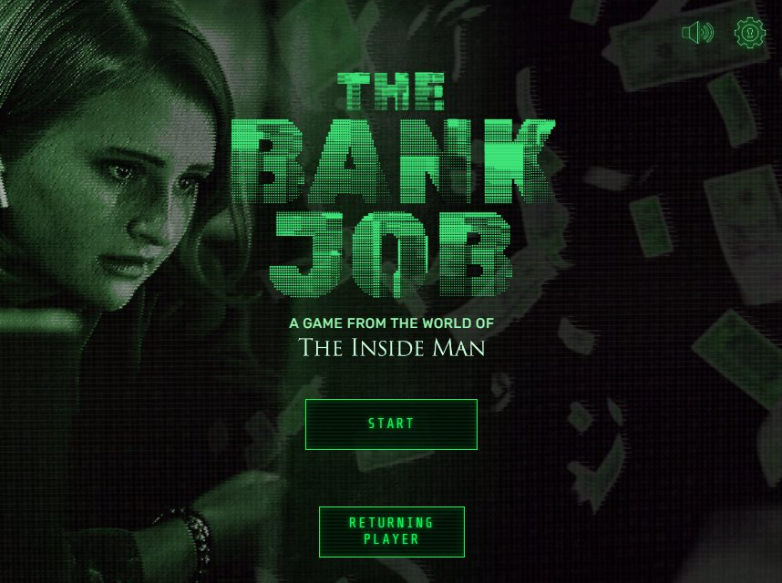
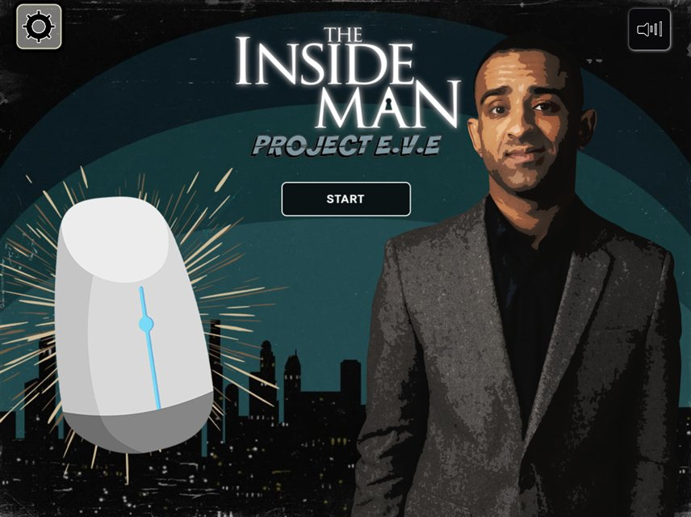
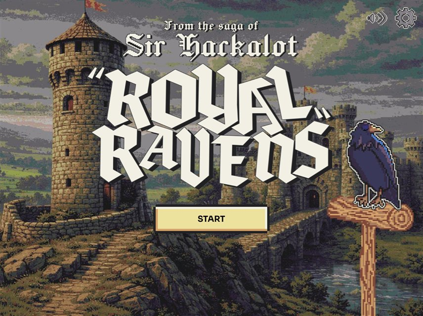
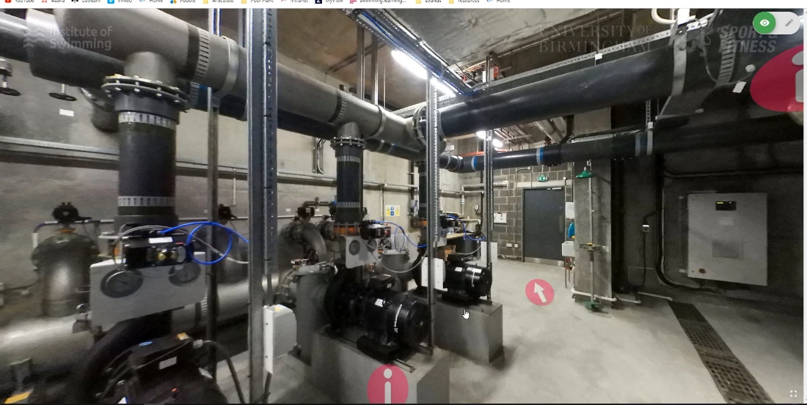
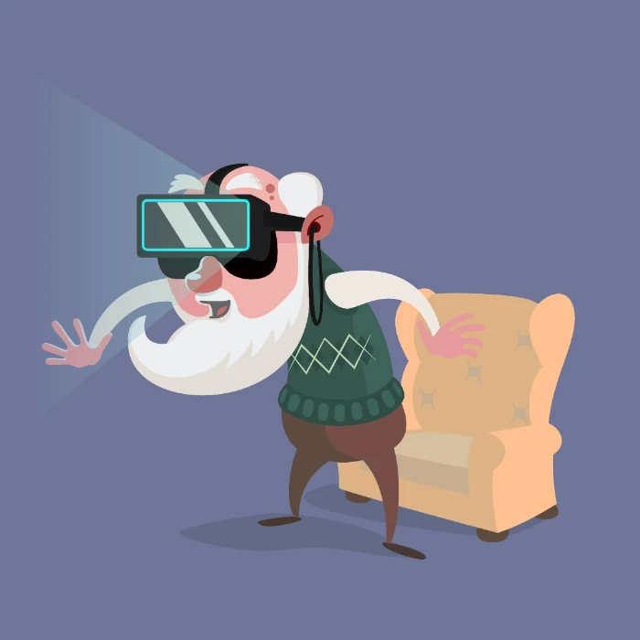
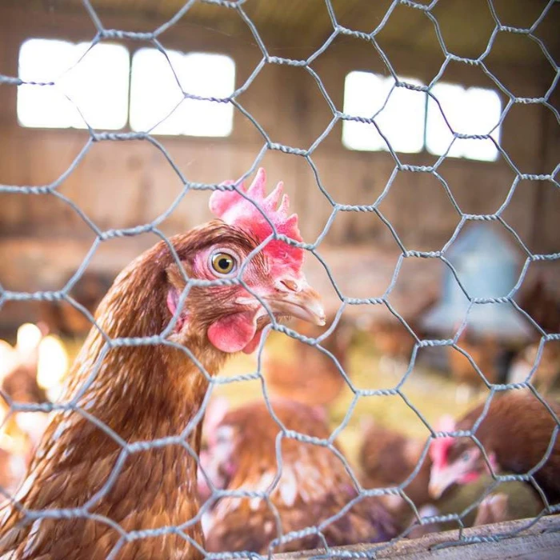

Making learning more engaging.
I build interactive experiences and visual content that help people explore complex subjects.
Take A closer look
Selected work

The Inside Man: The Bank Job
Led development of an open-source intelligence simulation based on The Inside Man, combining a vintage green CRT aesthetic, focused investigation gameplay, sound design and procedural randomisation.
View project
The Inside Man — Project e.v.e.
Developed a cybersecurity learning game using Construct 3, with accessibility-focused interaction changes, shields and rankings, and HTML5 and SCORM delivery options.
View project
Sir Hackalot: Royal Ravens Game
Developed a fantasy-themed phishing awareness game combining retro visuals, humour and randomized messages, asking players to distinguish legitimate mail, spam and phishing attempts.
View project
Pool Plant Operator
Developed blended learning resources for pool plant operators, combining interactive explanations of water treatment with a virtual plant-room tour to support practical training.
View projectBeyond learning design
Photography & illustration
Alongside my e-learning work, I create stock photography and illustrations. A few selected pieces show another side of my visual work.

A little more visual work

The person behind the projects
A creative approach
to learning.
My portfolio features work across interactive learning, cybersecurity simulation games, and complex technical training resources. I have experience building engaging experiences that require players to distinguish legitimate information from malicious threats, alongside developing virtual tours for practical process understanding.